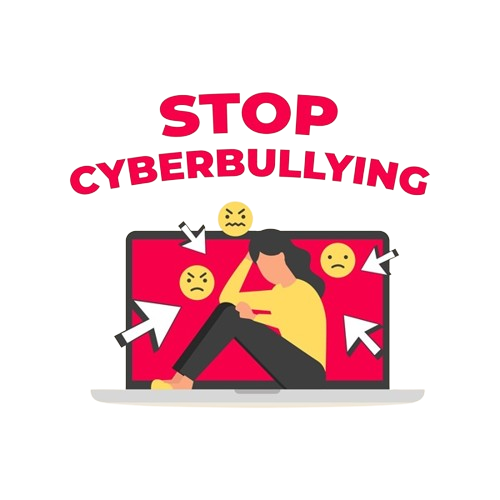

Selamat Datang di Kampanye Cyberbullying
Kami berkomitmen untuk meningkatkan kesadaran tentang cyberbullying dan memberikan sumber daya untuk membantu orang-orang yang terkena dampak. Pelajari lebih lanjut tentang cyberbullying, cara mencegahnya, dampaknya, dan bagaimana mendapatkan bantuan.
Apa itu Cyberbullying?
Cyberbullying adalah bentuk perilaku agresif dan merendahkan yang terjadi secara daring (online), menggunakan teknologi seperti media sosial, pesan teks, email, atau platform online lainnya untuk melakukan tindakan intimidasi, penghinaan, atau pelecehan terhadap seseorang.
Contoh dari cyberbullying termasuk:
- Pengiriman pesan ancaman atau intimidasi melalui email atau pesan teks.
- Penyebaran rumor atau informasi palsu tentang seseorang di media sosial.
- Penggunaan gambar atau video untuk mengejek atau merendahkan seseorang.

Cara Mencegah Cyberbullying
Berikut adalah beberapa cara untuk mencegah cyberbullying:
- Berusaha memahami perasaan orang lain dan berempati terhadap mereka.
- Berpikir secara bijaksana sebelum mengutarakan pendapat di dunia maya.
- Menghormati orang lain sekalipun di dunia maya dan menghindari komentar atau posting yang dapat menyakiti orang lain.
- Menggunakan pengaturan privasi di media sosial untuk melindungi informasi pribadi.
- Melaporkan tindakan cyberbullying kepada platform atau penyedia layanan yang relevan.
Dampak Cyberbullying
Cyberbullying dapat memiliki berbagai dampak negatif pada korban, termasuk:
- Kesehatan mental yang terganggu seperti kecemasan, depresi, dan rasa malu.
- Gangguan tidur seperti insomnia atau mimpi buruk.
- Masalah kesehatan fisik seperti sakit kepala, sakit perut, atau gangguan makan.
- Penurunan prestasi akademis atau performa kerja akibat dampak emosional.
- Peningkatan risiko penyalahgunaan zat dan perilaku berbahaya lainnya.
Bantuan
Jika Anda atau seseorang yang Anda kenal mengalami cyberbullying, berikut adalah beberapa langkah yang dapat diambil:
- Laporkan tindakan cyberbullying kepada platform atau aplikasi yang digunakan.
- Hubungi pihak berwenang, seperti polisi, untuk melaporkan insiden yang serius.
- Cobalah untuk mencari dukungan emosional dari teman, keluarga, atau seorang profesional seperti psikolog atau konselor.
- Gunakan layanan dukungan dan bantuan yang disediakan oleh organisasi non-profit yang menangani masalah cyberbullying.
- Ikuti program pendidikan dan pelatihan tentang cara melindungi diri dari cyberbullying.
Jangan ragu untuk melaporkan setiap insiden cyberbullying yang Anda alami. Tindakan cepat dapat membantu melindungi Anda dan mencegah hal yang lebih buruk terjadi.